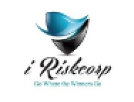

Raymond Alavera
Profile Summary
ICT Officer with 10 years of experience supporting and maintaining IT
infrastructure, systems, and networks, with a strong foundation in
troubleshooting, system administration, and technical support. Experienced
in analyzing technical issues, documenting solutions, and implementing IT
policies that improve efficiency and security.
Currently transitioning into software development, leveraging
problem-solving skills, logical thinking, and hands-on experience with
systems to build reliable, user-focused applications. Known for strong
communication, adaptability, and continuous learning in fast-paced
environments.
Education
Bachelor of Science in Information Technology
Ateneo de Naga University
2009 - 2014
Work Experience
-
Park House English School
IT Administrator
July 2020 to Present
Responsibilities
-
Managed enterprise IT infrastructure, cloud services, network
security, backups, and device administration while delivering
reliable end-user support, maintaining documentation, and
coordinating with vendors
Accomplishments
- Successfully design and implemented the school ID
-
Unitech Contracting and Engineering Services W.L.L
IT Administrator
December 2018 to July 2020
Responsibilities
-
Managed enterprise IT infrastructure, security, cloud services, user
support, and web systems while supporting business operations and
future IT development initiatives.
Accomplishments
-
Successfully setup, installed and configured head office Windows
Server 2012 R2 Active Directory Domain Services and implemented all
systems with Local Admin Security
-
Successfully upgraded the head office Wi-Fi system with Cisco
Wireless Controller 3504 and Cisco Aironet 2802i access points
-
Successfully upgraded and implemented in the head office and in the
project sites central file sharing with QNAP NAS Storage System
-
Successfully roll out and implemented Endpoint Protection with SEP
(Symantec Endpoint Protection) Small Business Edition to all systems
on-site and off-site
-
Successfully installed and configured Sophos Central Endpoint
Protection, Sophos APX 530 and Sophos XG106 firewall to sister
company showroom office
-
BIG (Bandary International Group)
Technical Support Officer
September 2016 to December 2018
Responsibilities
-
Delivered multi-site IT support, Active Directory administration,
server assistance, endpoint security management, and POS system
support while resolving tickets efficiently.
Accomplishments
-
Successfully setup, installed and configured consultant’s Windows
Server 2012 R2 Active Directory Domain Services
-
Successfully installed, configured and setup site’s file server
using Windows Server 2012 R2 with Active Directory Domain Services
and Distributed File System
-
Successfully rolled out, installed, configured and uploaded the
company’s policy for Kaspersky Endpoint Security 10 for Windows
anti-virus in all of the projects site locations
-
Successfully installed and configured WinSCP using SFTP between BRE
(Bandary Real Estate) office and B Square Mall office for file
sharing
-
IRISKCORP (Information Risk Corporation)

Network and Systems Administrator (MNM Group of Companies)
April 2016 to August 2016
Responsibilities
-
Managed small-to-medium IT environments covering infrastructure,
security, user support, backups, documentation, and vendor
coordination.
Accomplishments
-
Successfully upgraded, installed and configured MNM Group of
Companies wireless access point (Ubiquiti Unifi | AP AC PRO)
-
Successfully installed and configured MNM Group of Companies Active
Directory Domain Services Server with Windows Server 2012 R2
-
Successfully installed and configured MNM Group of Companies NAS
Storage System for file sharing
-
IRISKCORP (Information Risk Corporation)
IT Technical Support Engineer
April 2015 to April 2016
Responsibilities
-
Delivered client technical support, system setup, and issue
resolution across hardware, software, and network environments.
-
Installed and maintained desktops, Windows OS, applications, email
systems, wireless access points, and network devices.
-
Troubleshot system, network, and printer issues, performed updates,
and handled basic cabling tasks.
-
Maintained IT asset inventory, licensing records, and coordinated
with third-party vendors.
Other Responsibilities
-
Coordinated client IT equipment requests, supplier quotations,
procurement comparisons, and purchase orders.
-
Managed delivery, installation coordination, invoicing, sales
reporting, and organized procurement documentation (soft and hard
copies).
Skills
-
Software and Hardware
-
Proficient in using Microsoft Office Suite such as Word, Excel,
PowerPoint and Outlook, Adobe Suite like Photoshop
-
Knowledgeable in using Help Desk Application like Mojo Helpdesk,
Freshservice, OSTicket, Zoho ManageEngine Service Desk Plus and
remote access support like Remote Desktop Connection, TeamViewer,
QuickAssist, or Anydesk
-
Knowledgeable in using Hypervisor like Virtual Box, VMware and
Hyper-V
-
Knowledgeable in installing, upgrading and troubleshooting computer
hardware and software application to user standards
-
MS Operating Systems and Server
- Knowledgeable in Microsoft 365 exchange
-
Knowledgeable in installing, reformatting, and configuring Windows
7/8/10/11, MacOS, Windows Server 2008 R2/2012 R2 and Linux like
Ubuntu
-
Knowledgeable in administering AD DS (Active Directory Domain
Services), Group Policy, DNS and DHCP, AD FS, WDS, WSUS, File and
Storage Services, Batch and PowerShell Scripting
- Knowledgeable in Microsoft Dynamics CRM 2013
-
Networking Storage
-
Good understanding of OSI Model, TCP/IP addressing, Subnetting and
routing concepts
-
Knowledgeable in configuring EIGRP and OSPF, ACL, NAT, VPN, VLAN,
HSRP and VRRP, PPP and HDLC, VTP, STP, DHCP, Multilayer Switching
and EtherChannel Bundling Technique.
-
Knowledgeable in configuring general switch configuration, switch
port modes and switch port security
-
Knowledgeable in fiber optics and terminating UTP Cable (Cat5/5e/6)
with RJ45 and RJ11, patch panel and keystone jack, Cable Toner,
Network Analyzer
- Knowledgeable in SAN and NAS, RAID, NIC Teaming
-
Databases
-
Have had experience to use relational database like Oracle, MySQL
and PostgreSQL as a back end to an Android and Web base system
-
Programming Language
- Knowledgeable in C++ and Java
-
Knowledgeable in SQL (Structured Query Language), HTML and CSS,
JavaScript and PHP
-
Have had experienced to develop an android application and a system
using Microsoft VB 2010
Affiliation
Certifications